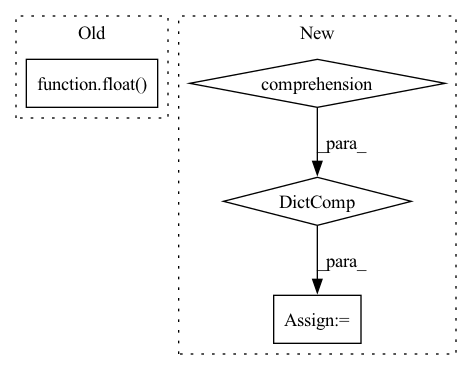

Pattern ID :39915
Before Change
try:
return average_precision_score(y_true=y_true, y_score=y_score, average="micro")
except ValueError:
return float( "nan")
@property
def smoothed_value(self) -> float:
raise AttributeError(After Change
if len(self.classes) > 0:
y_class = np.concatenate(self.classes)
classes = np.unique(y_class)
y_true_per_class = {c: [] for c in classes}
y_score_per_class = {c: [] for c in classes}
for i, cls in enumerate(y_class):
y_true_per_class[cls].append(y_true[i])
y_score_per_class[cls].append(y_score[i])In pattern: SUPERPATTERN
Frequency: 4
Non-data size: 4
Instances Fragment ID: 113441091
Project Name: jwoo5/fairseq-signals
Commit Name: 241c202d291cc51779e6351428ebf1a156102d7c
Time: 2022-12-11
Author: ojw0123@korea.ac.kr
File Name: fairseq_signals/logging/meters.py
M Class Name: AUCMeter
N Class Name: AUCMeter
M Method Name: auprc(1)
N Method Name: auprc(1)
M Parent Class: Meter
N Parent Class: Meter
M File Name: fairseq_signals/logging/meters.py
N File Name: fairseq_signals/logging/meters.py
M Start Line: 169
M End Line: 174
N Start Line: 189
N End Line: 210
Before Change
for wav, phn in tqdm(zip(*valid_set), total=len(valid_set[0])):
neural_computations(valid_loss, sb.model, wav, phn, "valid")
validation_wer = float( mean(valid_loss["wer"]))
print(validation_wer)
sys.exit(0)
sb.lr_annealing([sb.optimizer], epoch, validation_wer)
sb.save_and_keep_only({"wer": validation_wer}, [best_model])After Change
for wav, phn in tqdm(zip(*valid_set), total=len(valid_set[0])):
neural_computations(valid_loss, sb.model, wav, phn, "valid")
valid_loss = {key: float(mean(valid_loss[key])) for key in valid_loss}
sb.lr_annealing([sb.optimizer], epoch, valid_loss["wer"])
sb.save_and_keep_only({"wer": valid_loss["wer"]}, min_keys=["wer"])
sb.log_epoch_stats(epoch, train_loss, valid_loss)
Fragment ID: 113441078
Project Name: speechbrain/speechbrain
Commit Name: da125e573704b352bb4c7999f8bbea7bf431e292
Time: 2020-04-07
Author: plantinga.peter@gmail.com
File Name: recipes/ASR_CTC/TIMIT/VGG2_BLSTM_MLP/experiment.py
M Class Name: AnonimousClass
N Class Name: AnonimousClass
M Method Name: main(0)
N Method Name: main(0)
M Parent Class:
N Parent Class:
M File Name: recipes/ASR_CTC/TIMIT/VGG2_BLSTM_MLP/experiment.py
N File Name: recipes/ASR_CTC/TIMIT/VGG2_BLSTM_MLP/experiment.py
M Start Line: 24
M End Line: 47
N Start Line: 25
N End Line: 41
Before Change
result: List[Tuple[str, float]] = []
for line in lines:
split = line.split(sep=",")
result.append((split[0], float( split[1]) ))
return result
After Change
return dict()
df = pd.read_csv(self.aggregate_metrics_file)
pivot = df.pivot(index=COL_GPU, columns=COL_METRIC, values=COL_VALUE)
result = {index: series.to_dict() for index, series in pivot.iterrows()}
return result
Fragment ID: 113441079
Project Name: microsoft/innereye-deeplearning
Commit Name: 7def8a1076a983417d9cbf6ab2a589a2427776cf
Time: 2021-02-18
Author: antonsc@microsoft.com
File Name: InnerEye/Common/resource_monitor.py
M Class Name: ResourceMonitor
N Class Name: ResourceMonitor
M Method Name: read_aggregate_metrics(1)
N Method Name: read_aggregate_metrics(1)
M Parent Class: Process
N Parent Class: Process
M File Name: InnerEye/Common/resource_monitor.py
N File Name: InnerEye/Common/resource_monitor.py
M Start Line: 213
M End Line: 219
N Start Line: 230
N End Line: 233
Before Change
try:
return roc_auc_score(y_true=y_true, y_score=y_score, average="micro")
except ValueError:
return float( "nan")
@property
def auprc(self):
y_true = np.concatenate(self.targets)After Change
y_class = np.concatenate(self.classes)
classes = np.unique(y_class)
y_true_per_class = {c: [] for c in classes}
y_score_per_class = {c: [] for c in classes}
for i, cls in enumerate(y_class):
y_true_per_class[cls].append(y_true[i])
y_score_per_class[cls].append(y_score[i])
res = [] Fragment ID: 113441081
Project Name: jwoo5/fairseq-signals
Commit Name: 241c202d291cc51779e6351428ebf1a156102d7c
Time: 2022-12-11
Author: ojw0123@korea.ac.kr
File Name: fairseq_signals/logging/meters.py
M Class Name: AUCMeter
N Class Name: AUCMeter
M Method Name: auroc(1)
N Method Name: auroc(1)
M Parent Class: Meter
N Parent Class: Meter
M File Name: fairseq_signals/logging/meters.py
N File Name: fairseq_signals/logging/meters.py
M Start Line: 160
M End Line: 165
N Start Line: 164
N End Line: 185